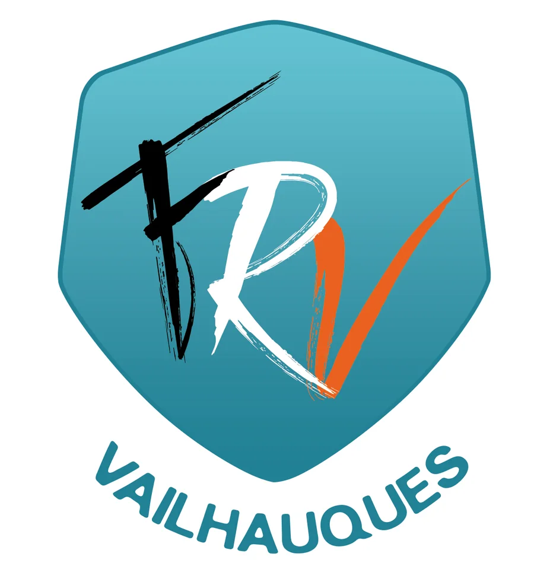

01
Jeux de société
Ambiance, stratégie, coopération, gestion, enquête ou jeux experts : chaque vendredi apporte de nouvelles propositions.
- Règles expliquées sur place
- Collections des membres
- Formats courts ou longues parties
Club de jeux à Vailhauquès
Jeux de société, jeux de figurines et jeux de cartes dans une ambiance conviviale, tous les vendredis soir près de Montpellier.
Venez seul ou accompagné : nous vous présentons les joueurs et vous trouvons une table.
Le club
Le Cercle des Joueurs Paresseux est une section du Foyer Rural de Vailhauquès.
Nous réunissons des joueurs aux goûts très variés : jeux familiaux, jeux experts, coopération, stratégie, affrontements de figurines ou jeux de cartes. L'important n'est pas de tout connaître, mais d'avoir envie de jouer.
La ludothèque de l'association grandit progressivement. Elle est complétée chaque semaine par les importantes collections personnelles de nos membres.

Vie associative locale
Le Cercle des Joueurs Paresseux est une section du Foyer Rural de Vailhauquès. Nos soirées s’inscrivent dans une démarche associative locale fondée sur la convivialité, la découverte et le partage.
Nous ne jouons pas nécessairement à tous les jeux cités chaque semaine, mais nous sommes toujours heureux de découvrir une nouvelle boîte, un nouveau jeu de cartes, un système de figurines ou un univers apporté par un participant.
Nos univers
Vous pouvez venir avec une idée précise ou simplement vous laisser guider par les tables disponibles.
Ambiance, stratégie, coopération, gestion, enquête ou jeux experts : chaque vendredi apporte de nouvelles propositions.
Warhammer 40,000, Age of Sigmar et StarCraft sont les systèmes les plus pratiqués, mais toutes les armées et tous les univers sont les bienvenus.
Parties amicales, découvertes et échanges entre joueurs dans une ambiance détendue, quel que soit votre niveau.
Première visite
Présentez-vous simplement en arrivant. Nous vous accueillons, vous montrons les tables disponibles et vous proposons un jeu adapté à vos envies.
Voir les informations pratiquesPas besoin d'inscription préalable pour venir découvrir l'ambiance.
Vous pouvez venir seul, avec des amis ou avec votre propre jeu.
Les règles sont expliquées et personne n'est laissé de côté.
La vie du Cercle
Jeux de société, batailles de figurines, cartes et rencontres : découvrez l'ambiance conviviale de nos soirées à Vailhauquès.
Jouer autour de Montpellier
À Vailhauquès, près de Montpellier, nous accueillons les joueurs curieux comme les habitués, sans exiger de connaître déjà un jeu ou un univers.
Jeux familiaux, jeux experts, coopération, stratégie, enquête ou ambiance : les tables changent selon les envies et les jeux apportés.
Nous ne jouons pas forcément à chaque titre régulièrement : une proposition suffit souvent pour lancer une découverte.
Découvrir les jeux de société →Jeux de cartes à collectionner, jeux évolutifs ou jeux de cartes autonomes : apportez votre deck, votre boîte ou simplement votre curiosité.
Même lorsqu'un jeu n'a pas encore de groupe régulier, nous sommes ouverts à l'essayer et à rencontrer de nouveaux joueurs.
Découvrir les jeux de cartes →Warhammer 40,000, Age of Sigmar et d'autres systèmes peuvent être proposés selon les joueurs présents.
Vous pratiquez un autre wargame ? Venez nous présenter ses règles et son univers : le club est toujours partant pour de nouvelles découvertes.
Découvrir le wargame →Cela ne veut pas dire qu'il ne nous intéresse pas. Nous ne jouons pas forcément régulièrement à tous les titres ou systèmes mentionnés, mais nous sommes toujours ouverts et partants pour découvrir un jeu, une règle, une armée ou un nouvel univers.
Autour de Montpellier
Le club se trouve à Vailhauquès et accueille les joueurs des communes voisines qui cherchent une table régulière.
Nous accueillons également des joueurs de Montarnaud, Combaillaux, Saint-Georges-d’Orques, Murles, Aniane, Saint-Paul-et-Valmalle et des communes alentour.
Accès au club
La salle se trouve à Vailhauquès, au 19 Route de Montarnaud. Les durées ci-dessous sont indicatives et peuvent varier selon votre point de départ et la circulation.
environ 20 à 30 min
Destination : Salle de l’Âge d’Or, Vailhauquès.
Voir l’itinéraireenviron 15 à 20 min
Destination : Salle de l’Âge d’Or, Vailhauquès.
Voir l’itinéraireenviron 15 à 20 min
Destination : Salle de l’Âge d’Or, Vailhauquès.
Voir l’itinéraireenviron 20 à 25 min
Destination : Salle de l’Âge d’Or, Vailhauquès.
Voir l’itinéraireenviron 5 à 10 min
Destination : Salle de l’Âge d’Or, Vailhauquès.
Voir l’itinéraireenviron 10 à 15 min
Destination : Salle de l’Âge d’Or, Vailhauquès.
Voir l’itinéraireenviron 15 à 20 min
Destination : Salle de l’Âge d’Or, Vailhauquès.
Voir l’itinéraireenviron 10 à 15 min
Destination : Salle de l’Âge d’Or, Vailhauquès.
Voir l’itinéraireenviron 20 à 25 min
Destination : Salle de l’Âge d’Or, Vailhauquès.
Voir l’itinéraireenviron 10 à 15 min
Destination : Salle de l’Âge d’Or, Vailhauquès.
Voir l’itinéraireDeux parkings sont situés à moins de 50 mètres de la salle. Vous pouvez donc transporter facilement vos boîtes de jeux, tapis, décors ou mallettes de figurines jusqu’au local.
Nous rejoindre
Une soirée régulière, facile à retenir et ouverte aux nouveaux joueurs.
Questions fréquentes
Les réponses aux questions que se posent le plus souvent les nouveaux visiteurs.
Oui. Nous vous présenterons les membres présents et vous aiderons à rejoindre une table.
Non. Les membres apportent une grande variété de jeux et la ludothèque associative se développe.
Pas du tout. Les règles sont expliquées avant les parties et les débutants sont les bienvenus.
Oui. Le club est ouvert à de nouveaux systèmes, formats et univers.
Oui. Les jeux mentionnés donnent des exemples, pas une liste fermée. Même sans groupe régulier sur votre système, nous sommes toujours ouverts à découvrir de nouveaux jeux, formats et univers.